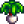
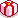
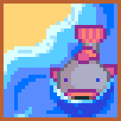
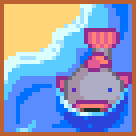

Spring Foraging Bundle (4)
Spring Foraging Bundle (4)
 Wild Horseradish Wild Horseradish |
Spring Foraging |
 Daffodil Daffodil |
Spring Foraging, buy from Pierre at Flower Dance |
|  Leek | Spring Foraging |
 Dandelion Dandelion |
Spring Foraging, buy from Pierre at Flower Dance |
|  Reward: Dandelion |  Spring Seeds (30) Spring Seeds (30) |
 Summer Foraging Bundle (3)
Summer Foraging Bundle (3)


 Fall Foraging Bundle (4)
Fall Foraging Bundle (4)


 Winter Foraging Bundle (4)
Winter Foraging Bundle (4)


 Construction Bundle (4)
Construction Bundle (4)


 Exotic Foraging Bundle (5)
Exotic Foraging Bundle (5)


 Spring Crops Bundle (4)
Spring Crops Bundle (4)


 Quality Crops Bundle (3)
Quality Crops Bundle (3)

 Animal Bundle (5)
Animal Bundle (5)


 Artisan Bundle (6)
Artisan Bundle (6)


 Lake Fish Bundle (4)
Lake Fish Bundle (4)


 
Ocean Fish Bundle (4)

Ocean Fish Bundle (4)


 Night Fishing Bundle (3)
Night Fishing Bundle (3)


 Crab Pot Bundle (5)
Crab Pot Bundle (5)


 Specialty Fish Bundle (4)
Specialty Fish Bundle (4)


 Blacksmith's Bundle (3)
Blacksmith's Bundle (3)


 Geologist's Bundle (4)
Geologist's Bundle (4)


 Field Research Bundle (4)
Field Research Bundle (4)


 Fodder Bundle (3)
Fodder Bundle (3)


 Enchanter's Bundle (4)
Enchanter's Bundle (4)

 2,500 Bundle
2,500 Bundle


 5,000 Bundle
5,000 Bundle
 10,000 Bundle
10,000 Bundle

 25,000 Bundle
25,000 Bundle